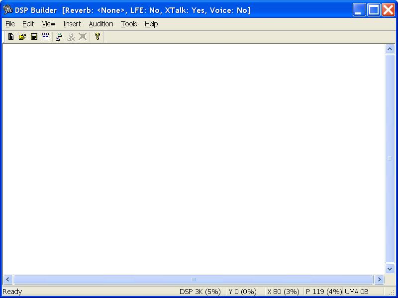
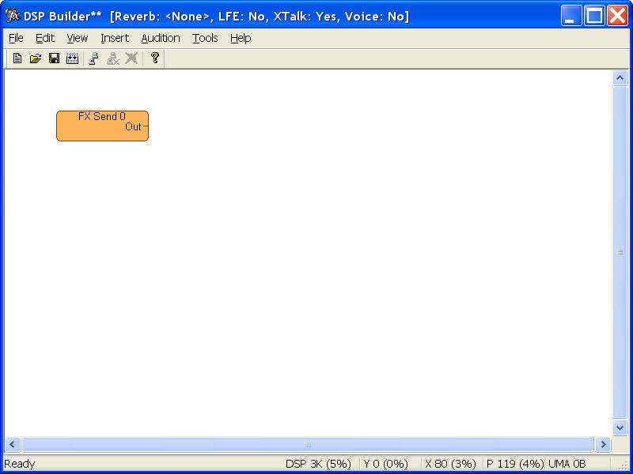
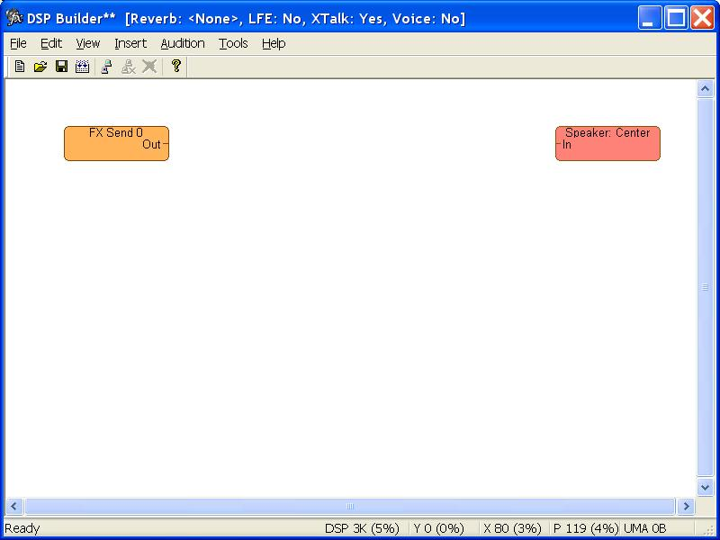
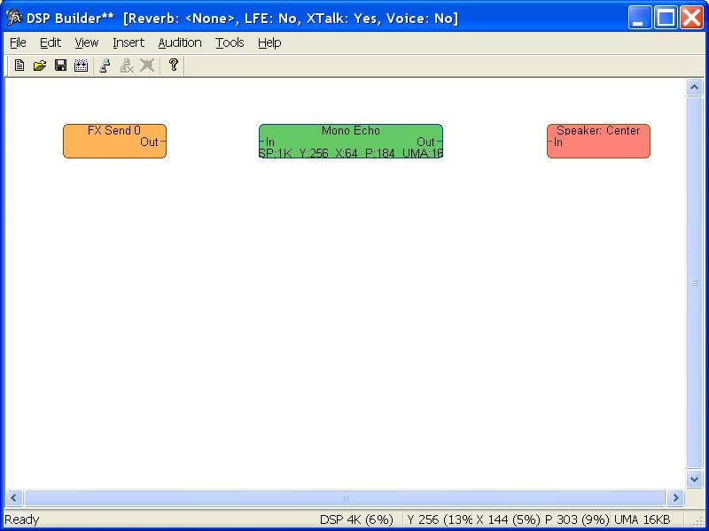
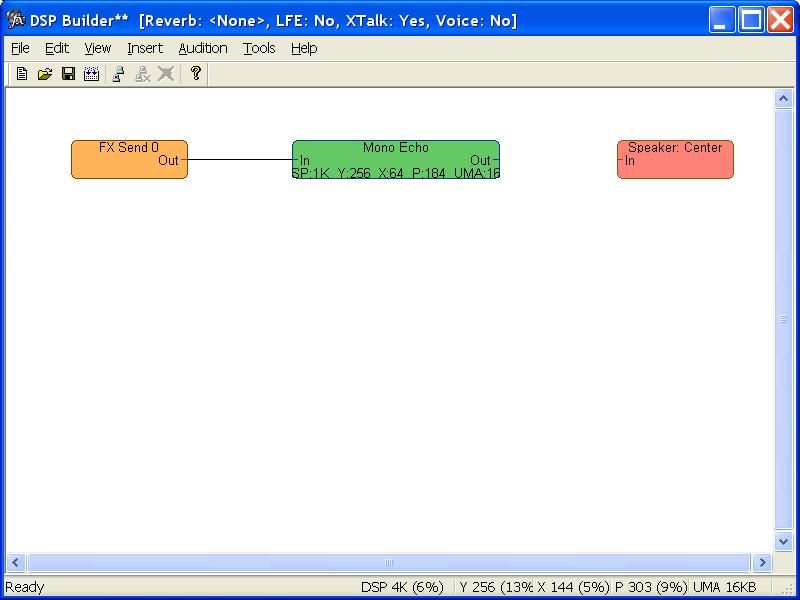
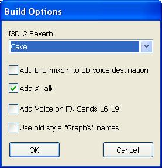

Using DSP Builder
This documentation describes how to create a basic DSP effects image using the DSP Builder tool. The DSP effects image can then be downloaded to the global processor DSP on the Xbox Media Communications (MCP) processor for sound effects.
For a more complex DSP effects image, you can look at the standard DSP effects image file (DSStdFx.fx) in the \Source\DSound\Dspserver\ subdirectory of the directory where the Xbox SDK is installed.
Prerequisites and Requirements
To use this tutorial, you will need a copy of the DSP Builder tool (dspbuilder.exe), the Xboxdbg.dll, the state files (.ini files) for your source DSP effects, and the scrambled binary images (.scr files) of the DSP effects. The DSP Builder tool can be found in the \xbox\bin\ subdirectory of the directory where the Xbox SDK is installed (usually C:\Program Files\Microsoft Xbox SDK\). The state files and the scrambled binary images can be found in the \source\dsound\dsp\ini and \source\dsound\dsp\bin subdirectories of the directory where the Xbox SDK is installed.
Steps
Complete the following steps to create a basic DSP effects image which adds a monophonic echo effect.
- If the system you are using does not have the Xbox SDK installed, complete the following steps:
- Access a development system with the Xbox SDK installed.
- Go to the directory where the Xbox SDK is installed.
- Get a copy of the Dspbuilder.exe and Xboxdbg.dll files from the \xbox\bin\ subdirectory of the directory where the Xbox SDK a from a development system that has the SDK installed. Usually, that will be the C:\Program Files\Microsoft Xbox SDK\xbox\bin directory.
- Get a copy of the folder which contains the state files.
- Get a copy of the folder which contains the scrambled binary images.
- Create a directory to store the DSP Builder files. For this tutorial, lets create a C:\dspbuilder\ directory.
- Place the copy of the Dspbuilder.exe and Xboxdbg.dll files in the root of the directory you created.
- Place the copy of the folder with the state files into the directory you created, so you will end up with a C:\dspbuilder\ini\ folder.
- Place the copy of the folder with the scrambled binary images into the directory you created, so you will end up with a C:\dspbuilder\bin\ folder.
- Start the DSP Builder tool. This will bring up the main screen of the DSP Builder tool.

If you get the "Unable to load effects. Please specify a valid directory" error message, or you want to change the directories containing the scrambled binary DSP effect images and/or state files, complete the following steps:
- Click Tools.
- Click Directories.
- Enter the directory which contains the state files (.ini files) for the DSP effects. For a development system with the Xbox SDK installed, this is usually C:\Program Files\Microsoft Xbox SDK\source\dsound\dsp\ini\. If you copied the files to a system without the Xbox SDK installed following the instructions above, it would be the C:\dspbuilder\ini\ directory.
- Enter the directory that contains the scrambled binary images (.scr files) of the DSP effects. For a development system with the Xbox SDK installed, this is usually C:\Program Files\Microsoft Xbox SDK\source\dsound\dsp\bin\. If you copied the files to a system without the Xbox SDK installed following the instructions above, it would be the C:\dspbuilder\bin\ directory.
- Click OK.
- Right-click on an open area of the screen to bring up the context menu. Since we're just starting, there should only be four items available on the menu: Insert Input Mixbin, Insert Output Mixbin, Insert Effect, and Show Grid.
- Click Insert Input Mixbin to open another menu with a list of mixbins.
- Click FX Send 0 to get a copy of the input FX Send 0 mixbin. This will be the source of audio data for the effect in this tutorial.
- Click on a blank part of the workspace to place the mixbin. To make it easier to draw the patch cables, place other mixbins, and place effects, try to pick a space on the left side of the workspace.

- Right-click on an open area of the screen again to bring up the context menu. Notice that the Delete All option is also available now.
- Click Insert Output Mixbin to open another menu with a list of mixbins.
- Click Speakers to open another menu with a list of speaker mixbins.
- Click Center to get a copy of the Speaker: Center mixbin. This will be the destination for the audio data processed by the effect. Notice that output mixbins only have one input ("In") in the box.
- Click on a blank part of the workspace to place the mixbin. To make it easier to draw the patch cables, place other mixbins, and place effects, try to pick a space on the right side of the workspace.

- Right-click on an open area of the screen one more time to bring up the context menu.
- Click Insert Effect to open another menu with a list of effects.
- Click Mono Echo to get a copy of the monophonic echo effect.
- Click on a blank part of the screen to place the effect. To make it easier to draw the patch cables, try to line the effect up with the FX Send 0 input mixbin.

- Complete the following steps to draw a patch cord from one of the input mixbins to the input on the effect.
- While the mouse pointer is over the dash near "Out" in the FX Send 0 input mixbin, click the left mouse button.
- Move the mouse pointer to the right and over the input ("In") of the monophonic echo effect.
- Click the left mouse button and that should draw the patch cord. If its connected correctly, it should be a black line.

- Complete the following steps to draw a patch cord from the effect to one of the output mixbins.
- While the mouse pointer is over the output ("Out") on the monophonic echo effect, click the left mouse button.
- Move the mouse pointer to the right and over the input ("In") that is in the output Speaker: Center mixbin.
- Click the left mouse button and that should draw the path cable. If its connected correctly, it should be a black line.

- Click on Tools.
- Click on Build Options to bring up the Build Options dialog box.

- Because our DSP effects image doesn't include a crosstalk cancellation effect or I3DL2 reverberation effect, we can automatically have them added in here. To do this, complete the following steps:
- Click on the drop-down list box below I3DL2.
- Select one of the default environments. For this example, lets use Cave.

- If it isn't checked already, click the check box next to Add XTalk to add the crosstalk cancellation effect.
- Optional. Select Add LFE to 3D voice destination to cause the DSP effects image to mix the outputs of the crosstalk mixbins used for 3D sound buffers and send the mix to the low frequency emitter mixbin.
- Click OK.
- Click File.
- Click Save to bring up the Save dialog box.
- Select the directory you want to use to save your DSP Builder file (.fx file).
- Enter the name for the file.
- Click Save.
- Click File.
- Click Generate and Save.
Related Topics
The following topics are related to using the DSP Builder tool.